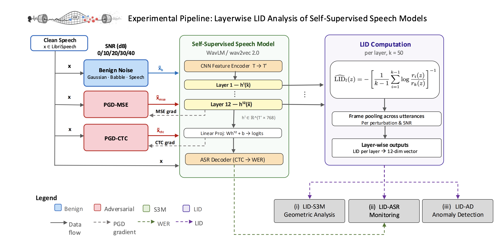

Projects
multi-GRIDS
An open-source library extending GRIDS framework to multimodal.
Author: S. Arcos-Holzinger, D. Chakraborty
GRIDS - anomaly detection in speech representations
Interspeech 2026Dimensionality-aware anomaly detection in learned representations of self-supervised speech models.

Authors: S. Arcos-Holzinger, S. M. Erfani, J. Bailey, S. Khudanpur
Alignment-aware speech retrieval
Late-interaction retrieval for lexically faithful matching between speech and text.
Authors: D. Chakraborty, S. Arcos-Holzinger
Publications
GRIDS: Dimensionality-Aware Anomaly Detection in Learned Representations of Self-Supervised Speech Models
To appear at Interspeech 2026 · arXiv:2605.02715
Towards Alignment-Aware Late Interaction for Lexically Faithful Speech Retrieval
ECIR 2026, Late Interaction Workshop (LIR)
Relative Transfer Matrix-Based Binaural Signal Denoising of Head-Mounted Microphone Array Recordings
EURONOISE 2025, 4299–4306
Speech Denoising in Multi-Noise Source Environments Using Multiple Microphone Devices via Relative Transfer Matrix
EUSIPCO 2024, 281–285
Collaborators
- S. M. Erfani, J. Bailey — University of Melbourne & Monash University
- S. Khudanpur — Johns Hopkins University, CLSP
- D. Chakraborty — Johns Hopkins University, HLTCOE
- M. Kumar, L. Birnie, A. Bastine, P. N. Samarasinghe, T. Abhayapala — Australian National University
Experience
Previous Roles
Sandra Arcos-Holzinger BEng, MEng
PhD Candidate, University of Melbourne (FEIT)
Doctoral Researcher, Johns Hopkins University (CLSP)
Engineer, 7+ years industry experience
Speech & signal processing
Denoising, microphone-array methods, and self-supervised speech representations.
Robustness in ML
Reliability, anomaly detection, cross-modal interaction, information retrieval and ASR.
Highlights
I will be presenting our GRIDS work at Interspeech 2026 in Sydney, Australia.
Building multi-GRIDS, an open-source library for multimodal interaction.
Participating in both JSALT 2026 & SCALE 2026 summer workshops held at Johns Hopkins University. Actively working on representation learning across multimodal (audio, vision, video) systems for robust encoding, retrieval and cross-modal interaction.
GRIDS paper accepted to Interspeech 2026.
ALI-CLAP paper accepted at the Late Interaction Workshop (LIR) @ECIR 2026.
Returned to academia as a PhD candidate at the University of Melbourne, and a Doctoral Researcher at Johns Hopkins University, CLSP.